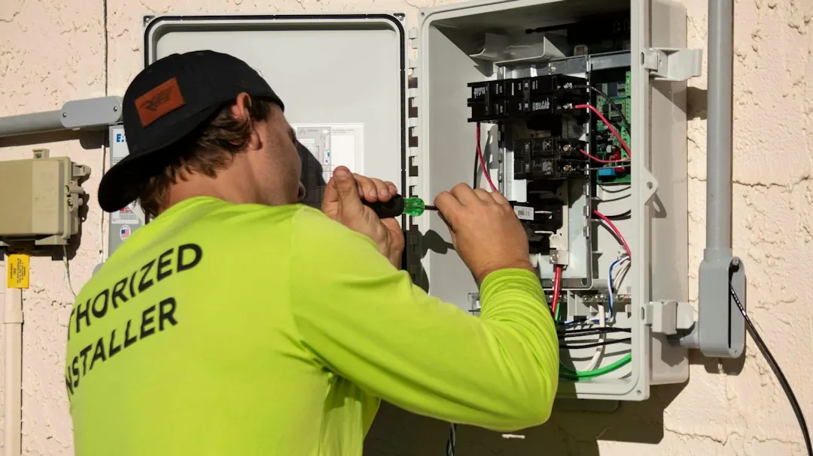

Repeated safety switch trips, dead circuits, flickering lights or dimming when an appliance starts can indicate a fault requiring circuit by circuit testing. Ceramic fuse boards have no safety switches and may need an upgrade. Describe the fault pattern, request a written scope and price before work begins, verify the Queensland electrical contractor licence, and keep the certificate of testing and compliance after installation work. Call 000 first for smoke, burning smells or electrical injury.
For homeowners comparing electrical repairs paddington options, the useful starting point is to describe the fault pattern, understand the likely work category and confirm that a licensed electrician will document the completed installation.
Electrical Repairs Paddington Explained
Electrician Paddington describes fault finding as tracing the problem circuit by circuit rather than repeatedly resetting a switch. That approach is relevant when a safety switch trips again immediately, part of the house loses power, a power point stops working or lights flicker.
Record what happens and when. Note whether the fault appears at night, during rain, when the oven starts or when the air conditioner is running. Identify the affected rooms, connected appliances and switch behaviour. If the switch still trips with everything unplugged, the published guide says wiring is the likelier cause.
Smoke, a burning smell or an electrical injury requires a call to 000 first. For a non emergency fault, describe the symptoms and ask for the cause to be investigated rather than simply restoring power.
- Record the rooms and fittings affected.
- Note the timing and any appliance involved.
- State whether the switch resets or trips again.
When an older switchboard changes the job
Paddington includes timber Queenslanders, workers' cottages and terraces with wiring added over decades. Cables and joints may be reached through roof spaces or under floors, so the visible symptom may not show where the fault is located.
A ceramic fuse board has no safety switches. The published explanation is that safety switches cut power when current leaks, including leakage through a person. An upgrade can put that protection across the whole house, but the quote should identify whether it covers an upgrade, fault repair or both.
Ask which circuits will be tested and whether access through the roof space or under the floor is expected. In a lined timber Queenslander, new cable may be routed through those areas instead of cutting open walls. That access question can change the work involved even when the requested fitting appears simple.
Separate fault finding from planned work
Fault finding starts with an uncertain cause. A new power point, light, fan, smoke alarm or EV charger is a defined installation request. Describing the job in those terms helps the written scope show what is known and what still needs investigation.
For an unexplained fault, provide affected rooms, timing, appliances and switch behaviour. Ask which circuit will be isolated and tested. For a planned upgrade, identify the fitting, location and access route, then ask what installation work is included.
The published EV charger service notes that switchboard capacity work should be sorted first. Renovation wiring may involve new circuits or a full rewire, particularly where kitchen or bathroom work changes the electrical layout. Smoke alarms may be replaced or interconnected so they sound together when one detects smoke.
For another view of the same local repair questions, see this related Paddington electrical repairs guide.
Check the trade, scope and paperwork
The business doing electrical work must hold a Queensland electrical contractor licence. Its published advice is to look up the licence number in the online Electrical licence holder search. Ask for the number so the responsible business can be checked before work begins.
Request the scope and price before work starts. A fault hunt can reveal surprises behind walls, while a power point or switchboard upgrade has a more defined scope. The quote should distinguish investigation, installation, access requirements and any switchboard capacity work.
After installation work is finished, a Queensland contractor must provide a certificate of testing and compliance. Keep it with the property records and ask which circuits were tested, what was changed and what was excluded.
- Confirm the contractor licence number.
- List the rooms, circuits and fittings involved.
- Ask about access through walls, floors or roof spaces.
- Retain the certificate supplied after installation work.
Who this guide applies to
This guide is for homeowners arranging electrical work in Paddington and nearby areas including Red Hill, Milton, Petrie Terrace, Bardon, Ashgrove, Auchenflower, Kelvin Grove, Spring Hill, West End, Toowong and South Brisbane.
It is most useful where a home has an older switchboard, layered wiring, a lined timber structure, renovation plans or a request for a charger, lighting, smoke alarms or additional power points. The practical local issue is how the housing type affects access and fault tracing.
The guide does not replace an electrician's diagnosis. It helps a homeowner report symptoms accurately, compare different scopes and retain the paperwork following completed installation work.
- Describe the symptom. Record which rooms or fittings are affected and when the problem occurs.
- Define the work. Ask whether the request involves fault finding, installation, a switchboard upgrade or a combination.
- Verify the licence. Request the Queensland electrical contractor licence number and check it in the online licence holder search.
- Keep the paperwork. Retain the written scope, price and certificate of testing and compliance supplied after installation work.
| Situation | Information to provide | Scope question |
|---|---|---|
| Unexplained fault | Affected rooms, timing and switch behaviour | Which circuit will be tested? |
| Planned upgrade | Fitting, location and access details | What installation work is included? |
Common questions
What should I tell an electrician about a tripping safety switch? Explain when it trips, which rooms lose power and whether it happens with a particular appliance, at night or in rain. If it still trips with everything unplugged, the wiring may be the likelier cause.
When should I ask about a switchboard upgrade? Ask when the home has a ceramic fuse board or lacks safety switches. The published guide says an upgrade can provide safety switch protection across the whole house.
Can I do electrical work myself in Queensland? The guide says homeowners are limited to simple tasks such as changing a light bulb, tube or fuse, and resetting a breaker or safety switch. Work beyond those tasks is for a licensed electrician.
How should I compare an electrical quote? Check whether it identifies fault finding, installation items, access requirements and any switchboard capacity work. A clear price should be provided before work starts.
What paperwork should I receive after installation work? A Queensland contractor must provide a certificate of testing and compliance after installation work. Keep it with the property records.
What if there is smoke or a burning smell? Treat smoke, a burning smell or an electrical injury as an emergency and call 000 first, as advised in the published guide.
This guide covers fault symptoms, older switchboards, planned electrical upgrades, licensing, quoting and completion paperwork for Paddington homes.